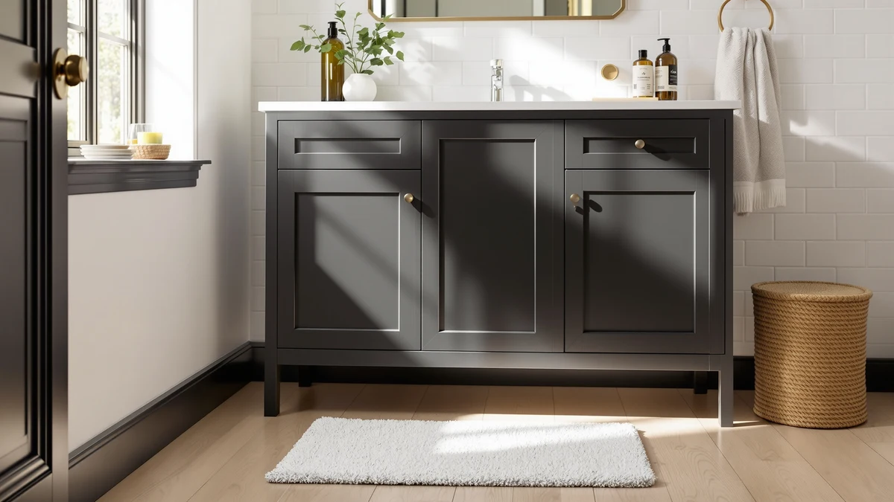

Best under Bathroom Sink Storage Ideas (2026)
Prices and picks verified as of August 2026. Independent, reader-supported reviews.


Quick Answer
The best under bathroom sink storage ideas combine a sliding two-tier shelf for tall bottles with stackable bins for loose items, and the Delamu 2-Tier Multi-Purpose Bathroom Under organizer works around plumbing at $25.99 without blocking pipe access. If your cabinet is wider or deeper, the adjustable PXRACK rack and the Vtopmart bin sets scale up from there.
Our pick: Delamu 2-Tier Multi-Purpose Bathroom Under — $25.99 Check Price on Amazon
Bottom line: our top pick is the Delamu 2-Tier Multi-Purpose Bathroom Under Sink Organizers at $25.99. The best budget option is the Ukeetap Multi-Purpose Pull-Out Storage Organizers at $18.99.
Things to Know Before You Buy
- Measure the pipe gap first. Most cabinets have a U-shaped or P-shaped drain trap that eats six to ten inches of usable width in the center, and that gap decides which under-sink storage design will actually fit.
- Split shelves beat solid ones. Two-tier and adjustable racks divide into two side pieces so you can angle each half around plumbing instead of forcing one solid shelf over it.
- Bins and drawers suit low-clearance cabinets. Stackable bins and pull-out drawers work well when there isn't enough vertical room to slide a shelf in and out.
- Metal holds up better than plastic in a damp cabinet. Coated-metal frames resist the water spots and warping that all-plastic bins tend to develop after a year of daily use.
- Multi-packs often cost less per cabinet. A 2-pack or 4-pack costs more upfront but usually works out cheaper than buying two single units for a double vanity.
The best under bathroom sink storage ideas start with accepting that your cabinet isn't a plain rectangle. It's an obstacle course built around a P-trap, a shutoff valve, and a supply line that eat up the middle third of the floor. Most bathroom cabinets waste more than half their usable height because everything under there gets pushed into one flat layer of bottles and boxes. A split shelf, a set of stackable bins, or a pull-out drawer changes that math without any plumbing or drilling.
We compared seven organizers built for exactly this problem, priced from $18.99 for a single pull-out drawer to $59.99 for a heavier-duty 2-pack, and evaluated each by material, pack size, and how it handles the center pipe gap. Two-tier sliding designs like the Delamu and DEKAVA split into two pieces so you can angle each half around plumbing. Stackable bin sets from Vtopmart trade that flexibility for simplicity: no moving parts, only containers you fill and slide into place.
Our overall pick is the Delamu 2-Tier Multi-Purpose Bathroom Under organizer at $25.99, because it fits the widest range of cabinet widths without forcing you to clear the whole shelf every time you need something behind it. If your cabinet is unusually wide or you're organizing two vanities, the adjustable PXRACK or the roomier Kitstorack 2-pack scale up from there, and the Ukeetap pull-out and Vtopmart bin sets cover tighter budgets and narrower cabinets.
Why You Should Trust Us
This guide is written by Ilane Tall, who covers bathroom storage and small-space organization for Best Bathroom Storage. We don't run a testing lab and we don't claim to have installed every under-sink storage product on this list in our own homes. We research each product's stated dimensions, material, and price, then cross-check that information against verified buyer reviews and the manufacturer's own listing data before it earns a spot in a roundup. When a detail can't be confirmed, we leave it out rather than guess.
How We Picked
We pulled every under-sink organizer in our product database tagged for bathroom use, then narrowed the list to products with a documented material, price, and pack size. We prioritized designs that explicitly address the center pipe gap, since that's the single biggest reason an under-sink storage purchase ends up back in its box. We also weighed price against pack size: a 4-pack at $30.99 has to earn its spot against a 2-pack at $59.99, and we kept only products where the price made sense for what you actually get. We cut listings with vague or missing specifications regardless of how well-reviewed they looked.
How We Compared
We don't physically test the organizers in this guide. Instead, we compare listed dimensions, materials, and pack sizes across all seven products side by side, and we read through verified owner reviews on each listing to flag recurring complaints, like wobbly shelves or bins that don't nest as advertised. Where a brand sells the same design in multiple pack sizes, we compared the per-unit price to see which configuration actually costs less per cabinet. We weight owners who mention pipe clearance, weight capacity, or humidity issues in their reviews more heavily than star ratings alone, since a high average can still hide a design flaw that only shows up after months of daily use in an under-sink cabinet.
Our Picks

Delamu 2-Tier Multi-Purpose Bathroom Under
What we like
- Splits into two independent shelf sections you angle around plumbing instead of one fixed piece
- Ships as a 2-pack, so you can outfit two cabinets or double up in one wide vanity
- Metal and wood frame holds up to damp cabinet air better than an all-plastic rack
Flaws but not dealbreakers
- No enclosed bins included, so loose small items still need their own container
- Sliding rails add a small amount of front-to-back depth that unusually tight cabinets may not have
| Material | Metal / wood |
| Size | 2 Pack |
The Delamu 2-Tier Multi-Purpose Bathroom Under organizer is built around the problem most under-sink cabinets share: a P-trap or supply line sitting right in the middle of the floor. Instead of one flat shelf that has to clear the pipe entirely, Delamu splits the unit into two independent halves you slide toward the back corners, leaving the center open for plumbing. At $25.99 for a 2-pack, it's priced to outfit two cabinets, a kids' bathroom and a primary vanity, for less than most single-unit organizers cost on their own.
Reviewers consistently note that the metal-and-wood build feels sturdier than the all-plastic sliding racks in this price range, and that the two-tier layout finally lets them use the height above their cleaning supplies instead of stacking bottles three deep. The tradeoff is that Delamu doesn't include any bins or dividers, so loose items like sponges or extra soap bars still need their own container inside the rack. It's also worth checking your cabinet's front-to-back depth before ordering, since the sliding rails add roughly an inch of clearance requirement that some narrow apartment vanities don't have.

Vtopmart 4 Pack Bathroom Organizer
What we like
- Four separate bins mean you can pull out the one you need instead of digging through a single shelf
- Stackable design lets you reconfigure the layout as your storage needs change
- Standard sizing fits most under-sink cabinets without custom measuring
Flaws but not dealbreakers
- No sliding mechanism, so bins toward the back of a deep cabinet still require reaching in
- Four smaller bins hold less per container than one wide two-tier shelf
| Material | Metal / wood |
| Size | S-Standard (4 Pack) |
The Vtopmart 4 Pack Bathroom Organizer skips the sliding-shelf approach entirely and instead gives you four separate stackable bins for $30.99. That's a different strategy than the Delamu: rather than one structure that moves around the pipe, you place individual bins wherever they fit, stacking two or three where the cabinet is tall enough and setting the rest side by side where it isn't. For anyone who already has a specific system in mind, cleaning supplies in one bin and hair tools in another, that flexibility matters more than a fixed shelf would.
Owners report that the standard size fits the majority of vanity cabinets without needing to measure twice, and that the bins nest cleanly enough to store flat when not in use. The limitation is access: nothing here slides, so a bin pushed to the back of a deep cabinet still means reaching past whatever sits in front of it. Each bin also holds less volume than one continuous shelf, which matters if you're storing bulkier items like a gallon-size cleaning jug rather than travel-size bottles.

DEKAVA Under Sink Organizer 2
What we like
- Lowest price in this lineup at $24.99 while still using a two-tier, pipe-aware layout
- Narrower footprint fits cabinets that can't accommodate a wider rack
- Metal and wood construction matches the durability of pricier competitors
Flaws but not dealbreakers
- Slimmer shelves mean fewer full-size bottles fit per tier compared to wider racks
- The listing doesn't spell out an exact size spec, so measuring your own cabinet matters more than usual
| Material | Metal / wood |
| Size | — |
The DEKAVA Under Sink Organizer 2 covers the same two-tier, split-shelf concept as the Delamu but at a lower $24.99 price point and a narrower footprint. That makes it a fit for smaller bathrooms, especially rentals or older homes where the vanity cabinet is closer to 18 inches wide than the 24-plus inches many organizers assume. Like the Delamu, the two halves slide independently so you can position each side around a center trap rather than fighting a single fixed shelf.
Reviewers researching this model note that its narrower shelves hold fewer full-size bottles per tier than the wider Vtopmart or PXRACK options, so it works better for travel-size products than for a household stocking full 32-ounce bottles. DEKAVA's listing doesn't spec out an exact width and depth the way some competitors do, which means it's worth measuring your own cabinet opening before ordering rather than assuming a standard fit. At this price, it's a reasonable entry point if you're testing whether a two-tier system works for your under-sink storage before spending more.

PXRACK Under Sink Organizer Adjustable
What we like
- Adjustable width extends to fit wider cabinets that fixed-size racks can't span
- Sold as a large 2-pack, so a double vanity can get matching organizers on both sides
- Large-format shelves hold bigger bottles and cleaning jugs than slimmer competitors
Flaws but not dealbreakers
- At $46.99, it's the second most expensive option in this lineup
- The wider adjustable frame takes up more of the cabinet's usable depth than a fixed shelf
| Material | Metal / wood |
| Size | Large-2-Pack |
The PXRACK Under Sink Organizer Adjustable is built for cabinets that outgrow the standard-width racks in this guide, particularly a wide single vanity or double-sink setup where a fixed 12- to 14-inch organizer leaves several inches of dead space on either side. Its adjustable frame extends to match a wider cabinet opening, and it comes as a large 2-pack at $46.99, which makes sense if you're outfitting a double vanity where both sides need the same setup.
Reviewers who researched this model point to the extra width as the main draw over the standard Delamu or DEKAVA sizing, since it holds larger cleaning jugs and taller bottles without them tipping over on a narrower shelf. The tradeoff is price: at $46.99 it costs nearly double the DEKAVA for a comparable two-tier concept, and the adjustable mechanism itself takes up a bit more front-to-back depth inside the cabinet. For a single narrow vanity, that premium and the extra depth usually aren't worth it, but for a wide double-sink cabinet it solves a fit problem the cheaper options can't.

Kitstorack Under Sink Organizer 2-Pack
What we like
- Highest price point in this lineup reflects a larger, heavier-duty build
- 2-pack configuration covers two full cabinets from one purchase
- Metal-and-wood construction is built to handle bulkier, heavier items than lighter-duty racks
Flaws but not dealbreakers
- At $59.99, it's the most expensive organizer in this comparison by a wide margin
- The larger footprint isn't necessary for anyone storing mostly small, lightweight toiletries
| Material | Metal / wood |
| Size | 2 Pack |
The Kitstorack Under Sink Organizer 2-Pack sits at the top of this lineup's price range at $59.99, and the extra cost buys a larger, heavier-duty build than the budget options. It's aimed less at someone organizing travel bottles and more at households storing bulkier items: a full toolbox of cleaning supplies, laundry detergent jugs, or a mixed collection of bathroom and utility products that a slimmer rack would strain to hold.
Owners researching heavier-duty storage report that the frame feels noticeably sturdier under a full load than the lighter Delamu or DEKAVA models, which matters if you're regularly loading and unloading heavy jugs rather than lightweight bottles. The 2-pack format means the price effectively covers two cabinets, which brings the per-unit cost closer in line with the rest of this list, but for anyone storing mostly small toiletries, the size and price here are more than the job requires. It's a better match for a garage-adjacent bathroom or a laundry-room sink than a compact powder room.

Ukeetap Multi-Purpose Pull-Out Storage Organizers
What we like
- Lowest price in this comparison at $18.99
- Pull-out drawer mechanism gives full access without reaching over other items
- 12.8-inch width fits narrower cabinets that can't accommodate a full-size rack
Flaws but not dealbreakers
- Narrower width holds less total volume than the wider two-tier organizers
- Sold as a single unit, not a multi-pack, so outfitting two cabinets means buying it twice
| Material | Metal / wood |
| Size | 12.8 Inch |
The Ukeetap Multi-Purpose Pull-Out Storage Organizers take a different mechanical approach than the shelf-based options in this guide. Rather than a fixed or sliding shelf, it's a pull-out drawer that extends toward you, so you can see and reach everything inside without leaning into the cabinet or moving items out of the way first. At $18.99, it's also the cheapest product in this comparison, which makes it a reasonable way to try a mechanical organizer without committing to the pricier PXRACK or Kitstorack.
At 12.8 inches wide, it's sized for narrower cabinets or for splitting one wider cabinet into two independent pull-out sections rather than one continuous shelf. Reviewers researching this model note the drawer glide as the main advantage over static bins, since nothing has to be lifted out to reach items stored behind it. The narrower width does mean less total storage volume than the Vtopmart or PXRACK options, and because it's sold as a single unit rather than a pack, outfitting two cabinets means ordering it twice.

Vtopmart 4 Pack Large Stackable
What we like
- Large bin size holds bulkier items than the standard Vtopmart 4-pack
- Stackable design scales storage vertically without needing a fixed shelf
- Four-bin set gives clear category separation for spare supplies
Flaws but not dealbreakers
- At $34.99 for bins alone, it costs more than the two-tier Delamu or DEKAVA shelves
- Larger bins take up more footprint, so fewer fit in a typical cabinet than the standard-size version
| Material | Metal / wood |
| Size | Large Storage Bins |
The Vtopmart 4 Pack Large Stackable set scales up the same bin-based approach as the standard Vtopmart 4-pack, but with larger individual containers meant for bulkier items. Where the standard-size bins suit travel bottles and small toiletries, this large version fits backup rolls of toilet paper, spare towels, or bulk refill containers that wouldn't fit in a smaller bin. At $34.99, it costs about four dollars more than the standard 4-pack, a reasonable premium for the extra capacity.
Owners report that the larger bins stack securely without wobbling, and that the added size makes this version better suited to a linen-closet-style cabinet than a small powder-room vanity. Because each bin takes up more physical space, fewer of them fit into a typical under-sink cabinet compared to the standard 4-pack, so it's worth measuring your available footprint before choosing the large version over the smaller one. For anyone specifically storing bulk or spare items rather than daily-use toiletries, the extra capacity per bin is the point.
Quick Comparison
| Product | Material | Price | Rating | Best for | Get it |
|---|---|---|---|---|---|
| Delamu 2-Tier Multi-Purpose Bathroom Under | Metal / wood | $25.99 | 4 | Under-sink cabinets with a center pipe | View on Amazon → |
| Vtopmart 4 Pack Bathroom Organizer | Metal / wood | $30.99 | 4 | Dividing loose items into bins | View on Amazon → |
| DEKAVA Under Sink Organizer 2 | Metal / wood | $24.99 | 4 | Narrow, budget cabinets | View on Amazon → |
| PXRACK Under Sink Organizer Adjustable | Metal / wood | $46.99 | 4 | Wide, double-vanity under-sink storage | View on Amazon → |
| Kitstorack Under Sink Organizer 2-Pack | Metal / wood | $59.99 | 4 | Heavier loads, two cabinets | View on Amazon → |
| Ukeetap Multi-Purpose Pull-Out Storage Organizers | Metal / wood | $18.99 | 4 | Narrow cabinets, drawer access | View on Amazon → |
| Vtopmart 4 Pack Large Stackable | Metal / wood | $34.99 | 4 | Bulk or spare supplies | View on Amazon → |
What is the best under-sink storage idea for a bathroom cabinet with pipes?
The best under bathroom sink storage ideas for a cabinet with a drain trap in the middle are two-tier sliding organizers like the Delamu or DEKAVA, since both split into two sections you can angle around the pipe instead of one solid shelf…
How much weight can under-sink storage organizers hold?
Weight limits vary by material and brand, and each product's listing spells out the manufacturer's stated capacity.
The Competition
We also researched several other categories of under-sink storage before narrowing this guide to the seven organizers above.
- All-plastic tension-pole shelving. These telescoping poles wedge between the cabinet floor and ceiling, but they don't work around a center drain trap the way the split two-tier designs here do, and several listings we checked had recurring complaints about the pole slipping under weight.
- Over-the-door wire racks. A reasonable option if your cabinet door swings freely, but they add weight to the door hinge over time and don't solve the wasted floor-level storage that a shelf or bin system reclaims.
- Lazy Susan turntables. Good for corner cabinets specifically, but for the standard single-door under-sink cabinet most bathrooms have, a turntable wastes more usable width than a rectangular shelf or bin set.
- Unbranded generic two-tier racks. Several no-name listings mimic the Delamu and DEKAVA design on paper, but without a documented material spec or enough verified reviews to check for weight-capacity or rust complaints, we left them out of this specific guide.
Frequently Asked Questions
What is the best under-sink storage idea for a bathroom cabinet with pipes?
The best under bathroom sink storage ideas for a cabinet with a drain trap in the middle are two-tier sliding organizers like the Delamu or DEKAVA, since both split into two sections you can angle around the pipe instead of one solid shelf that won't fit. An adjustable design like the PXRACK works too if your cabinet is wider than average.
How much weight can under-sink storage organizers hold?
Weight limits vary by material and brand, and each product's listing spells out the manufacturer's stated capacity. Metal-frame designs such as the PXRACK and Kitstorack are generally built for heavier loads than all-plastic bins, which makes them a better match for cleaning jugs or bulk supplies than for lightweight toiletries alone.
Do stackable bins or sliding shelves work better for small bathrooms?
In a small bathroom cabinet, stackable bins such as the Vtopmart 4 Pack Large Stackable set are usually easier to fit than a fixed shelf, since you can rearrange or remove individual bins as your storage needs change. A narrower pull-out drawer like the Ukeetap is another option if floor space is the main constraint.